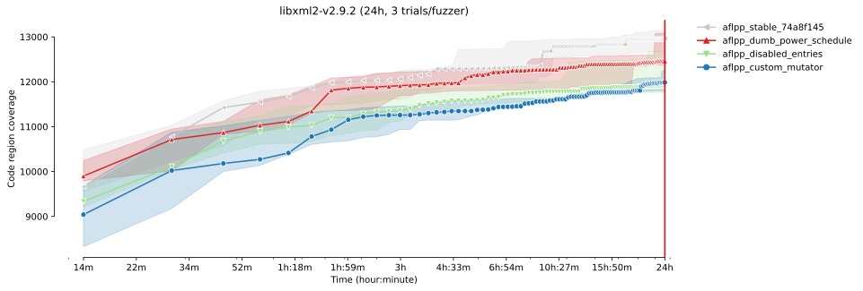

FuzzBench: brain13 report
warning
Please consider this as a preliminary report to
demonstrate the capabilities of FuzzBench. While we have
tried our best, we have not confirmed that we configured
everything correctly. We are hoping to work together
with the community to validate results and improve the
set of fuzzers, benchmarks, and their configurations in
the future.
See FAQ
for more details.
experiment summary
We show two different aggregate (cross-benchmark) rankings of fuzzers. The first is based on the average of per-benchmarks scores, where the score represents the percentage of the highest reached median code-coverage on a given benchmark (higher value is better). The second ranking shows the average rank of fuzzers, after we rank them on each benchmark according to their median reached code-covereges (lower value is better).By avg. score
| average normalized score | |
|---|---|
| fuzzer | |
| aflpp_stable_74a8f145 | 97.51 |
| aflpp_disabled_entries | 97.27 |
| aflpp_dumb_power_schedule | 97.10 |
| aflpp_custom_mutator | 93.89 |
By avg. rank
| average rank | |
|---|---|
| fuzzer | |
| aflpp_disabled_entries | 2.00 |
| aflpp_stable_74a8f145 | 2.33 |
| aflpp_dumb_power_schedule | 2.67 |
| aflpp_custom_mutator | 3.00 |
-
Critical difference diagramThe diagram visualizes the average rank of fuzzers (second ranking above) while showing the significance of the differences as well. What is considered a "critical difference" (CD) is based on the Friedman/Nemenyi post-hoc test. See more in the documentation.
Note: If a fuzzer does not support all benchmarks, its ranking as shown in this diagram can be lower than it should be. So please check the list of supported benchmarks for the fuzzer(s) of your interest. The list could be specified in the fuzzer's README.md like this.
-
Median relative code-coverages on each benchmark
Note: The relative coverage summary table shows the median relative performance of each fuzzer to the experiment maximum. Thus the highest relative performance may not be 100%.
trial_relative_coverage = trial_coverage / experiment_max_coverage
aflpp_stable_74a8f145 aflpp_disabled_entries aflpp_dumb_power_schedule aflpp_custom_mutator FuzzerMedian 98.69 98.98 95.01 91.23 FuzzerMean 96.48 96.25 96.08 92.89 bloaty_fuzz_target 92.02 99.16 95.01 88.63 libjpeg-turbo-07-2017 98.72 98.98 98.38 98.82 libxml2-v2.9.2 98.69 90.60 94.85 91.23 - Fuzzers are sorted by "FuzzerMean" (average median relative coverage), highest on the left.
- Green background = highest relative median coverage.
- Blue gradient background = greater than 95% relative median coverage.
bloaty_fuzz_target summary
Ranking by median reached code coverage
Reached code coverage distribution
Mean code coverage growth over time
Mean code coverage growth over time
* The error bands show the 95% confidence interval
around the mean code coverage.
-
Sample statistics and statistical significance (code coverage)
Code coverage sample statistics
count mean std min 25% median 75% max fuzzer time aflpp_disabled_entries 86400 3.0 6562.000000 135.325533 6409.0 6510.0 6611.0 6638.5 6666.0 aflpp_dumb_power_schedule 86400 3.0 6268.666667 135.389561 6113.0 6223.5 6334.0 6346.5 6359.0 aflpp_stable_74a8f145 86400 3.0 6095.333333 592.496695 5484.0 5809.5 6135.0 6401.0 6667.0 aflpp_custom_mutator 86400 3.0 5755.333333 404.044964 5297.0 5603.0 5909.0 5984.5 6060.0
Vargha-Delaney A12 measure The table summarizes the A12 values from the pairwise Vargha-Delaney A measure of effect size. Green cells indicate the probability the fuzzer in the row will outperform the fuzzer in the column.
Mann-Whitney U test The table summarizes the p values of pairwise Mann-Whitney U tests. Green cells indicate that the reached coverage distribution of a given fuzzer pair is significantly different.
-
Unique code coverage plots
Ranking by unique code regions covered Each bar shows the total number of code regions found by a given fuzzer. The colored area shows the number of unique code regions (i.e., regions that were not covered by any other fuzzers).
Pairwise unique code coverage Each cell represents the number of code regions covered by the fuzzer of the column but not by the fuzzer of the row
-
Code coverage reports for each fuzzer on this benchmark
libjpeg-turbo-07-2017 summary
Ranking by median reached code coverage
Reached code coverage distribution
Mean code coverage growth over time
Mean code coverage growth over time
* The error bands show the 95% confidence interval
around the mean code coverage.
-
Sample statistics and statistical significance (code coverage)
Code coverage sample statistics
count mean std min 25% median 75% max fuzzer time aflpp_disabled_entries 86400 3.0 3778.333333 18.770544 3758.0 3770.0 3782.0 3788.5 3795.0 aflpp_custom_mutator 86400 3.0 3784.666667 32.868425 3757.0 3766.5 3776.0 3798.5 3821.0 aflpp_stable_74a8f145 86400 3.0 3778.666667 21.779195 3761.0 3766.5 3772.0 3787.5 3803.0 aflpp_dumb_power_schedule 86400 3.0 3764.666667 11.590226 3757.0 3758.0 3759.0 3768.5 3778.0
Vargha-Delaney A12 measure The table summarizes the A12 values from the pairwise Vargha-Delaney A measure of effect size. Green cells indicate the probability the fuzzer in the row will outperform the fuzzer in the column.
Mann-Whitney U test The table summarizes the p values of pairwise Mann-Whitney U tests. Green cells indicate that the reached coverage distribution of a given fuzzer pair is significantly different.
-
Unique code coverage plots
Ranking by unique code regions covered Each bar shows the total number of code regions found by a given fuzzer. The colored area shows the number of unique code regions (i.e., regions that were not covered by any other fuzzers).
Pairwise unique code coverage
 Each cell represents the number of code regions covered by the fuzzer
of the column but not by the fuzzer of the row
Each cell represents the number of code regions covered by the fuzzer
of the column but not by the fuzzer of the row
-
Code coverage reports for each fuzzer on this benchmark
libxml2-v2.9.2 summary
Ranking by median reached code coverage
Reached code coverage distribution
Mean code coverage growth over time
Mean code coverage growth over time

* The error bands show the 95% confidence interval
around the mean code coverage.
-
Sample statistics and statistical significance (code coverage)
Code coverage sample statistics
count mean std min 25% median 75% max fuzzer time aflpp_stable_74a8f145 86400 3.0 12925.666667 233.498037 12675.0 12820.0 12965.0 13051.0 13137.0 aflpp_dumb_power_schedule 86400 3.0 12636.000000 384.500975 12371.0 12415.5 12460.0 12768.5 13077.0 aflpp_custom_mutator 86400 3.0 12008.666667 223.442013 11798.0 11891.5 11985.0 12114.0 12243.0 aflpp_disabled_entries 86400 3.0 12110.000000 494.943431 11753.0 11827.5 11902.0 12288.5 12675.0
Vargha-Delaney A12 measure
 The table summarizes the A12 values from the
pairwise Vargha-Delaney A measure of effect size.
Green cells indicate the probability the fuzzer in the
row will outperform the fuzzer in the column.
The table summarizes the A12 values from the
pairwise Vargha-Delaney A measure of effect size.
Green cells indicate the probability the fuzzer in the
row will outperform the fuzzer in the column.
Mann-Whitney U test The table summarizes the p values of pairwise Mann-Whitney U tests. Green cells indicate that the reached coverage distribution of a given fuzzer pair is significantly different.
-
Unique code coverage plots
Ranking by unique code regions covered Each bar shows the total number of code regions found by a given fuzzer. The colored area shows the number of unique code regions (i.e., regions that were not covered by any other fuzzers).
Pairwise unique code coverage Each cell represents the number of code regions covered by the fuzzer of the column but not by the fuzzer of the row
-
Code coverage reports for each fuzzer on this benchmark
experiment data
You can download the raw data for this report here.Check out the documentation on how to create customized reports using this data. Also see some example Colab notebooks for doing custom analysis on the data here.
The experiment was conducted using this FuzzBench commit: 45668bb09ccc1f7ab7f2cdebee11a18b9d8d4e27
To reproduce this experiment run the following commands in your FuzzBench repo:
# Check out the right commit.
git checkout 45668bb09ccc1f7ab7f2cdebee11a18b9d8d4e27
# Download the internal config file.
curl https://storage.googleapis.com/brain13/config/experiment.yaml > /tmp/experiment-config.yaml
make install-dependencies
# Launch the experiment using paramters from the internal config file.
PYTHONPATH=. python experiment/reproduce_experiment.py -c /tmp/experiment-config.yaml -e <new_experiment_name>
Experiment Description:
(None,)